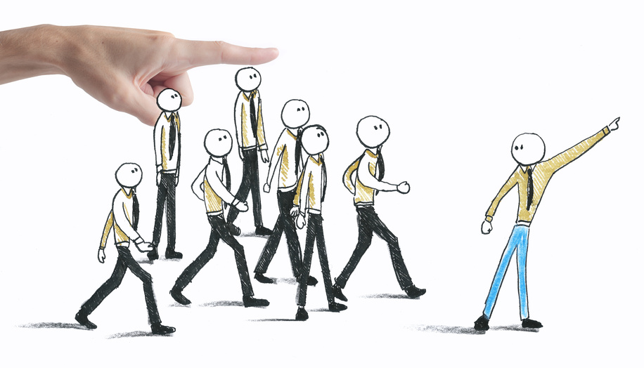

Dirección
Esta etapa del proceso administrativo comprende la influencia del administrador en la realización de los planes, obteniendo una respuesta positiva de sus empleados mediante la comunicación, la supervisión y la motivación.
Importancia
- 1. Pone en marcha todos los lineamientos establecidos durante la planeación y la organización.
- 2. A través de ella se logran las formas de conducta mas deseables en los miembros de la estructura organizacional.
- 3. La dirección eficientemente es determinante en la moral de los empleados y, consecuentemente, en la productividad.
- 4. Su calidad se refleja en el logro de los objetivos, la implementaron de métodos de organización, y en la eficacia de los sistemas de control.
- 5. A través de ella se establece la comunicación necesaria para que la organización funcione.
Comunicación
La comunicación puede entenderse como un intercambio, interrelación, como diálogo, como vida en sociedad, todo ello relacionado indiscutiblemente con las necesidades productivas del hombre y no puede existir sin el lenguaje.
Para que la comunicación sea efectiva dentro y fuera de la organización esta debe ser:
Abierta: Tiene como objetivo el comunicarse con el exterior; ésta hace referencia al medio más usado por la organización para enviar mensajes tanto al público interno como externo.
Evolutiva : Hace énfasis a la comunicación imprevista que se genera dentro de una organización.
Flexible : Permite una comunicación oportuna entre lo formal e informal.
Multidireccional: Esta maneja la comunicación de arriba hacia abajo, de abajo hacia arriba, transversal, interna, externa entre otras.
Instrumentada: Utiliza herramientas, soportes, dispositivos; porque hoy en día muchas organizaciones están funcionando mal, debido a que las informaciones que circulan dentro de ella no llegan en el momento adecuado ni utilizan las estructuras apropiadas para que la comunicación sea efectiva.
Liderazgo
Liderazgo se produce cada vez que se trata de influir en el comportamiento de un individuo o grupo. Los líderes son hombres persiguiendo sus sueños, y por eso suelen ser inquietos, innovadores, apasionados y disciplinados, con el deseo de hacer lo que les gusta como premisa.
Los líderes pueden encabezar grandes transformaciones, siempre que cuenten con un equipo capaz de acompañarlos, que usen su tiempo con inteligencia, que confieran a ese equipo la posibilidad de intercambiar impresiones con su jefe (incluso disentir con este) y de sentirse útil siendo parte de la tarea que están llevando a cabo.
El liderazgo es una cuestión de espíritu, una combinación de personalidad y visión . Los estilos de los líderes son múltiples, no existe una receta sino solo experiencias de hombres comunes viviendo las circunstancias que le impuso su época.
Créditos
Hecho 100% con HTML5, CSS3 y JavaScript, sin uso de librerías o frameworks
Diseñado y desarrollado por: Juan Curvelo y Gayvelin Briord